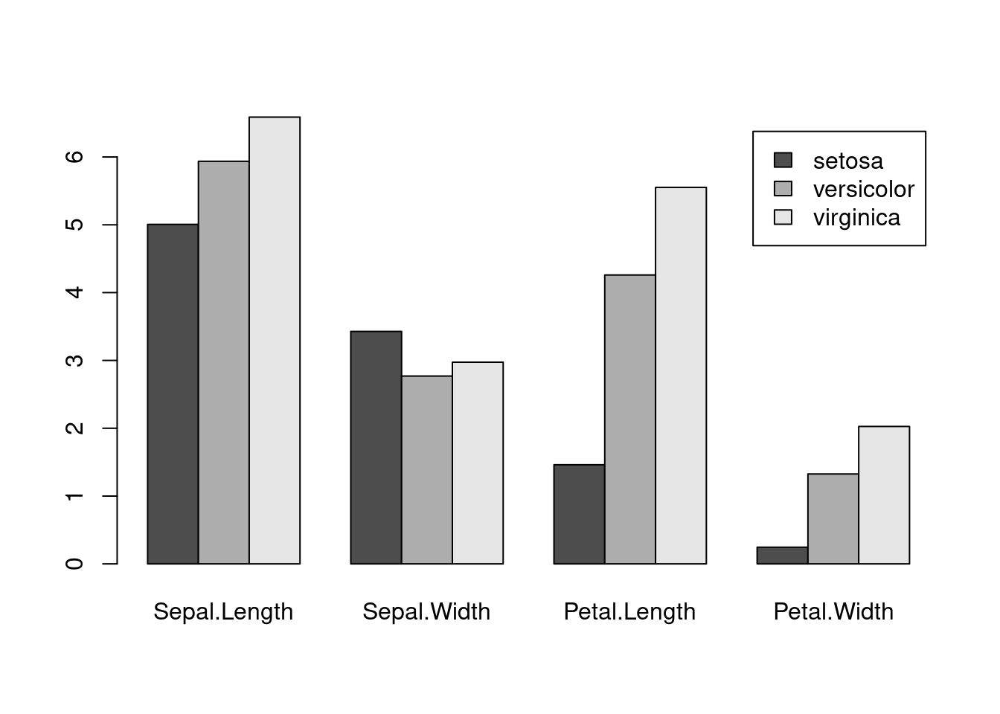

6 Apply and basic graphics
6.1 apply
apply는 데이터를 변형하기 위한 함수라기 보다는 데이터를 다룰 때 각 원소별, 그룹별, row, 또는 column 별로 반복적으로 수행되는 작업을 효율적으로 수행할 수 있도록 해주는 함수입니다. apply 계열의 함수를 적절히 사용하면 효율성이나 편리성 뿐만 아니라 코드의 간결성 등 많은 장점이 있습니다. 쉬운 이해를 위해 colMean 함수를 예로 들면 colMean은 column 또는 row 단위로 해당하는 모든 값들에 대해 평균을 계산해주는 함수이고 apply를 사용할 경우 다음과 같이 apply 함수와 mean 함수를 이용해서 같은 기능을 수행할 수 있습니다. 아래는 babies 데이터의 clearning 된 (위에서 만들었던) new_babies 데이터에 이어서 수행되는 내용입니다.
library(UsingR)
head(babies)
df <- subset(babies, select=c(gestation, wt, dwt))
colMeans(df, na.rm=T)
apply(df, 2, mean, na.rm=T)위와 같이 colMeans와 apply가 똑같은 결과를 보여주고 있습니다. 두 번째 인자인 margin의 값으로 (?apply참고) 여기서는 2가 사용되었으며 margin 값이 1인지 2인지에 따라서 다음과 같이 작동을 합니다.

mean외에도 다양한 함수들이 사용될 수 있으며 아래와 같이 임의의 함수를 만들어서 사용할 수 도 있습니다. 아래 코드에서는 function(x)...로 바로 함수의 정의를 넣어서 사용했으나 그 아래 mysd 함수와 같이 미리 함수 하나를 만들고 난 후 함수 이름을 이용해서 apply를 적용할 수 있습니다.
apply(df, 2, sd, na.rm=T)
apply(df, 2, function(x){
xmean <- mean(x, na.rm=T)
return(xmean)
})apply 함수는 특히 R에서 느리게 작동하는 loop (for, while 등) 문 대신 사용되어 큰 행렬에 대해서도 빠른 계산 속도를 보여줄 수 있습니다.
n <- 40
m <- matrix(sample(1:100, n, replace=T), ncol=4)
mysd <- function(x){
xmean <- sum(x)/length(x)
tmpdif <- x-xmean
xvar <- sum(tmpdif^2)/(length(x)-1)
xsd <- sqrt(xvar)
return(xsd)
}
## for
results <- rep(0, nrow(m))
for(i in 1:nrow(m)){
results[i] <- mysd(m[i,])
}
print(results)
apply(m, 1, mysd)
apply(m, 1, sd)apply 함수 외에도 sapply, lapply, mapply 등의 다양한 apply계열 함수가 쓰일 수 있습니다. 먼저 lapply는 matrix 형태 데이터가 아닌 list 데이터에 사용되어 각 list 원소별로 주어진 기능을 반복해서 수행하며 sapply는 lapply와 유사하나 벡터, 리스트, 데이터프레임 등에 함수를 적용할 수 있고 그 결과를 벡터 또는 행렬로 반환합니다.
x <- list(a=1:10, b=exp(-3:3), logic=c(T,T,F,T))
mean(x$a)
lapply(x, mean)
sapply(x, mean)
x <- data.frame(a=1:10, b=exp(-4:5))
sapply(x, mean)
x <- c(4, 9, 16)
sapply(x, sqrt)
sqrt(x)
y <- c(1:10)
sapply(y, function(x){2*x})
y*2마지막 예제에서처럼 sapply나 lapply도 임의의 함수를 만들어 적용시킬 수도 있습니다. 자세히 살펴 보면 y는 10개의 값을 갖는 벡터이고 이 벡터의 각 원소 (값에) 함수를 반복해서 적용하는 것 입니다. 함수에서 x는 각 원소의 값을 차례차례 받는 역할을 하므로 1부터 10까지 값이 함수로 들어가 2를 곱한 수가 반환됩니다. 따라서 벡터연산을 하는 y*2와 결과가 같으나 원하는 함수를 정의해서 자유롭게 사용할 수 있다는 장점이 있습니다. 리스트의 경우는 다음과 같이 사용합니다.
y <- list(a=1:10, b=exp(-3:3), logic=c(T,T,F,T))
myfunc <- function(x){
return(mean(x, na.rm=T))
}
lapply(y, myfunc)
unlist(lapply(y, myfunc))즉, myfunc의 x가 list y의 각 원소들, y[[1]], y[[2]], y[[3]]를 각각 받아서 mean 연산을 수행해 줍니다. 결과로 각 list 원소들의 평균 값이 반환되며 unlist 함수는 list 형태의 반환 값을 vector 형태로 전환해 줍니다.
6.1.1 Exercise
다음은 앞에서 수행했던 airquality 데이터를 월별로 나눈 데이터셋임. 이 데이터셋을 이용하여 각 월별로 온도와 오존 농도의 평균값을 저장한 data.frame 형식의 데이터를 만들기 위하여 다음 단계별 과정에 적절한 코드를 작성하시오
## dataset
g <- factor(airquality$month)
airq_split <- split(airquality, g)- 다음
df의ozone평균을 구하는ozone_func함수를 작성하시오 (단 입력은data.frame형식의 오브젝트를 받고 출력은 평균값 (정수 값 하나) 출력.mean함수 사용시 데이터에NA가 포함되어 있을 경우na.rm=T옵션 적용)
## May data.frame
df <- airq_split[[1]]
#
# write your code here for ozone_func function
#
## Usage
ozone_func(df)
## output
# 23.61538lapply와ozone_func함수를 사용하여airq_splitlist 데이터의 월별ozone평균 값을 구하고ozone_means에vector형식으로 저장하시오위 1), 2)와 같은 방법으로
temp_func함수를 만들고 월별temp의 평균값을temp_means에vector형식으로 저장하시오.위에서 구해진 두 변수값들을 이용하여
air_means라는 이름의data.frame으로 저장하시오
6.2 scatter plot
R에서 plot 함수는 가장 기본이 되는 그래프 함수 입니다. 아래는 산포도를 그려주는 코드로서 myxy가 두 개의 변수(x1과 y1)를 가지고 있으므로 아래 명령들은 모두 같은 그림을 그려주게 됩니다.
x <- c(1:100)
y <- x*2 + rnorm(100)
myxy <- data.frame(x,y)
plot(myxy)
plot(myxy$x, myxy$y)
plot(x=myxy$x, y=myxy$y)
plot(y~x, data=myxy)가장 마지막 명령은 formula를 사용한 plot으로 첫번째 파라메터 인자로 formula 타입이 전달되면 plot.formula 함수가 실행되며 x, y 값이 전달될 경우 plot.default 함수가 수행됩니다. R에서는 이렇게 전달되는 파라메터의 타입에 따라서 다른 기능을 하는 함수를 Generic function 이라고 합니다. 만약 기존 그림에 추가 데이터의 산포를 그리고 싶은 경우 points라는 함수를 사용합니다.
z <- sample(1:100, 100, replace =T)
points(x, z)
points(x, z, col="red")6.3 histogram
hist 함수는 데이터들의 분포를 히스토그램으로 그려주는 함수입니다. 히스토그램은 데이터들이 갖는 값을 특정 구간으로 나누고 각 구간에 해당하는 데이터가 몇 개인지 빈도수를 계산하여 막대그래프로 보여줍니다.
x <- rnorm(100)
hist(x, br=20, xlim=c(-3,3), main="Main text", xlab="X label")
hist(airquality$Wind, br=50)
hist(airquality$Wind, br=10)6.4 boxplot
boxplot (상자 수염 그림)은 데이터의 여러가지 대표값 (중간값 median, 첫번째 사분위수 1st quantile, 세번째 사분위수 3rd quantile, 최소 minimum, 최대값 maximum) 등을 한눈에 볼 수 있도록 만들어놓은 그래프 입니다. 수염이 나타내는 값은 최소값이나 최대값이 될 수 있고 또는 하부 1.5 IQR 에서 최소 데이터와 상부 1.5 IQR 내에 최고 데이터를 나타낼 수 있으며 이 경우 그 외에 존재하는 값들은 outlier가 됩니다.
x <- rnorm(100)
boxplot(x)
r <- boxplot(airquality$Wind)
airquality$Wind[which(airquality$Wind > (1.5*(r$stats[4]-r$stats[2])+r$stats[4]))]
with(airquality, {
Wind[which(Wind > (1.5*(r$stats[4]-r$stats[2])+r$stats[4]))]
})
with(airquality, {
val <- (1.5*(r$stats[4]-r$stats[2])+r$stats[4])
Wind[which(Wind > val)]
})
with(airquality, {
iqr <- quantile(Wind, 3/4) - quantile(Wind, 1/4)
val <- 1.5 * iqr + quantile(Wind, 3/4)
Wind[which(Wind > val)]
})data.frame 타입의 오브젝트에 대해서 boxplot을 그릴 경우 여러 변수의 데이터들의 분포를 한눈에 비교할 수 있읍니다.
y <- rnorm(100, 1, 1)
#boxplot(y)
xy <- data.frame(x, y)
boxplot(xy)
class(xy)
##
mean_vals <- sample(10)
mymat <- sapply(mean_vals, function(x){rnorm(100, x)})
dim(mymat)
boxplot(mymat)6.5 barplot
막대그래프는 각 값들을 막대 형태로 나란히 배치하여 서로 비교가 용이하도록 만든 그래프 입니다. table 함수는 같은 값을 갖는 데이터들이 몇 개나 있는지 테이블을 만들어주는 함수 입니다. rbind는 두 변수를 row를 기준으로 붙여주는 역할의 함수입니다.
x <- sample(1:12, 200, replace = T)
tab_x <- table(x)
y <- sample(1:12, 200, replace = T)
tab_y <- table(y)
tab_xy <- rbind(tab_x, tab_y)
barplot(tab_xy)
barplot(tab_xy, beside = T)
barplot(tab_xy, beside = T, col=c("darkblue","red"))
barplot(tab_xy, beside = T, col=c("darkblue","red"), xlab="Month")
barplot(tab_xy, beside = T, col=c("darkblue","red"), xlab="Month", horiz=TRUE)6.5.1 Exercise
iris데이터의 꽃받침 (Sepal) 길이와 넓이를 각각 x와 y축으로 하는 산포도를 그리시오iris데이터에서 setosa 품종의 꽃받침의 (Sepal) 길이와 넓이 데이터를 빨간 점으로 나타내시오iris데이터에서 꽃받침과 (Sepal) 꽃잎의 (Petal) 길이의 분포를 그리시오 (hist사용)iris데이터에서 꽃받침과 (Sepal) 꽃잎의 (Petal) 넓이의 분포를 그리시오 (boxplot사용)iris데이터에서 품종별 꽃받침 (Sepal) 길이의 분포를 그리시오 (boxplot사용)
6.6 Draw multiple graphs in the same plot
위 예제들에서 사용한 high level function들을 low level function (lines, points, ablines, axis 등)들과 함께 사용함으로써 원하는 도표 대부분을 그려낼 수 있습니다. 최근 널리 사용되는 ggplot2 패키지를 이용한 그래프 사용법 강의에서는 오늘 배우는 그래픽 명령어는 거의 사용하지 않습니다. 그러나 위 함수들은 R의 기본 그래프 함수들로서 단순한 도표에서부터 복잡한 그래픽까지 구현할 수 있는 다양한 유연성을 제공하므로 기본적인 사용법을 정확히 이해하는 것이 좋습니다.
아래 도표는 평균 0, 분산 1인 분포에서 500개의 랜덤한 수를 뽑아 x에 저장하고 x의 분포를 히스토그램으로 표현한 것 입니다. 그리고 x 값들과 상관성이 있는 y값들을 (x에 2를 곱하고 평균 5, 분산 1인 랜덤하게 뽑힌 수를 노이즈로 더함) 생성하고 모든 1000개 값들의 분포를 그린 히스토그램 입니다.
x <- rnorm(500)
hist(x, 100)
y <- 2*x + rnorm(500, mean=5, sd=1)
z <- c(x,y)
hist(z, br=100)이제 위 histogram 그래프에 density 함수와 lines 함수를 조합하여 확률밀도함수 커브를 그려 넣을 수 있습니다. 이 때 hist 함수에 probability=T 옵션을 넣어 y축의 스케일을 확률밀도함수의 y 스케일과 맞춰주어 같은 화면에 그려지도록 했습니다.
hist(z, br=100)
hist(z, br=100, probability = T)
zd <- density(z)
lines(zd)또한 아래 그래프는 위에서 생성한 x, y 값의 산포도를 그리고 x축과 y축 범위를 xlim, ylim 파라메터로 조절하는 예제 입니다. ?pch 도움말을 참고하여 다양한 포인트 모양을 선택할 수 있으며 x 값이 0 보다 작은 경우의 index를 뽑아 해당되는 x 값들과 그 값들의 짝이 되는 y값들에 대해서만 다시 포인트 그림을 red 색상으로 그려 넣었습니다. lm 은 linear model의 약자로 회귀 곡선을 구할 때 사용하는 함수이며 이 함수를 abline과 조합하여 회귀 직선을 그릴 수 있습니다.
plot(x,y, xlim=c(-5, 5), ylim=c(-5, 15), pch=3)
idx <- which(x<0)
points(x[idx], y[idx], col="red")
fit <- lm(y~x)
abline(fit)6.6.1 Exercise

- 1부터 100까지 수 를 랜덤하게 1000개 생성해서 x좌표를 생성하고 xcoord에 저장 하시오 (중복허용)
- 1부터 100까지 수 를 랜덤하게 1000개 생성해서 y좌표를 생성하고 ycoord에 저장 하시오 (중복허용)
- x, y 좌표 평면에 xcoord와 ycoord 값을 이용하여 좌표를 (산포도) 그리되 x와 y의 범위가 모두 -10부터 110까지 되도록 지정 하시오 (plot 이용)
- 앞서 문제와 같은 plot에 x가 50보다 크고 y가 50보다 큰 곳에 있는 좌표들에 red closed circle로 표현하시오 (which, points, pch parameter 등 이용, 아래 참고)
idx <- which(xcoord>50 & ycoord>50)
points(x=xcoord[idx], y=ycoord[idx], col="red", pch=19)- 앞서 문제와 같은 plot에 x가 50보다 작고 y가 50보다 큰 곳에 있는 좌표들에 blue closed circle로 표현하시오 (which, points, pch parameter 등 이용)
- 앞서 문제와 같은 plot에 원점으로부터 거리가 50 이하인 좌표들을 green closed circle로 표현 하시오
6.7 Usuful functions II
#match(), %in%, intersect()
x <- 1:10
y <- 5:15
match(x, y)
x %in% y
intersect(x, y)
#unique()
unique(c(x, y))
#substr()
x <- "Factors, raw vectors, and lists, are converted"
substr(x, 1, 6)
#grep()
grep("raw", x)
#grepl()
grepl("raw", x)
if(grepl("raw", x)){
cat("I found raw!")
}
x <- paste(LETTERS, 1:100, sep="")
grep("A", x)
x[grep("A", x)]
grepl("A", x)
r <- grepl("A", x)
if(r){
cat("Yes, I found A")
}else{
cat("No A")
}
#strsplit()
x <- c("Factors, raw vectors, and lists, are converted", "vectors, or for, strings with")
y <- strsplit(x, split=", ")
#unlist()
unlist(y)
y <- strsplit(x, split="")
ychar <- unlist(y)
ycount <- table(y2)
ycount_sort <- sort(ycount)
ycount_sort <- sort(ycount, decreasing = T)
ycount_top <- ycount_sort[1:5]
ycount_top_char <- names(ycount_top)
#toupper(), tolower()
toupper(ycount_top_char)6.7.1 Exercise
built-in 데이터셋 중 state.abb 은 미국의 50개 주에대한 축약어임.
이 중 문자 A 가 들어가는 주를 뽑아 x에 저장 하시오 (
grep또는grepl사용)state.abb 중 위 x에 저장된 이름들을 빼고 y에 저장 하시오 (
match()또는%in%사용)state.abb에 사용된 알파벳의 갯수를 구하고 가장 많이 쓰인 알파벳을 구하시오 (
strsplit(),table()등 사용)
6.7.2 Exercise
iris 데이터셋의 각 Species 별로 꽃잎과 꽃받침의 길이와 넓이에 대한 평균값들을 구하고 막대그래프를 그리시오


이 저작물은 크리에이티브 커먼즈 저작자표시-비영리-변경금지 4.0 국제 라이선스에 따라 이용할 수 있습니다.